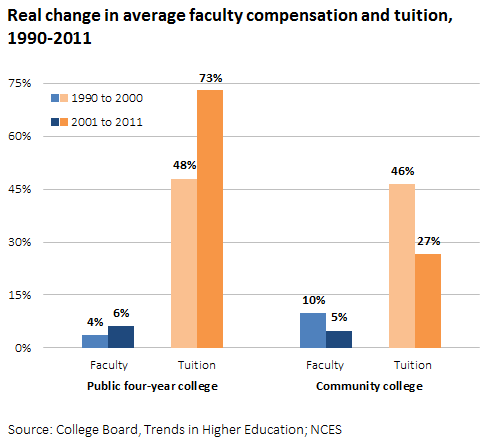

During college is when students have the hardest time handling money, and a ton of college students aren’t educated on how they should be spending their money due to relying on their parents money most of their life. In these next couple of years of college, they tend to make really risky decisions to save money.
In recent years, a majority of college students have come forward about their struggles throughout their college experience, where the most common instance is their lack of money and the inability to provide for themselves. In recent studies, more than three-quarters of seniors in college admitted that they had run out of money within a month of starting college, which has lead to unhealthy living styles for these students.
As the cost of colleges have climbed, some students have gone hungry. When they’ve voiced their concerns, they’ve often been ridiculed for it so they have to resort to other options such as dropping out of college (51% drop out because of finacial issues), or even going so far as to starve themselves, etc. Another example is paying for testing, or even paying for your admission application. No one has really gone over this topic, just barely grazed the surface of it. Yet, these aren’t the only problems students face. There is also the problem with student loans.
In total, Americans carried $thirteen point fifteen trillion in debt as of year end 2017. Mostly being Mortgage debt- about sixty one percent of the total, if you include home equity loans. Unsurprisingly, the next largest category isn’t auto loans or credit cards. It’s student loans, which are now twenty percent of the total debt. Their share has been growing steadily over the years, and it pressures not only students but their parents as well. Parents are so worried they won’t be able to provide their child/children the best educational opportunities they can possible, so it hurts these people to hear their child didn’t get accepted into their dream college/put on the waiting list even if they had exceptional grades.
Another problem with the expenses aspect of everything is the students. One of the major reasons college students run out of money so quickly is because they spend a significant amount of their money on unnecessary things. This happens mostly because they weren’t taught how to manage their money correctly or what to prioritize their money on prior to college.